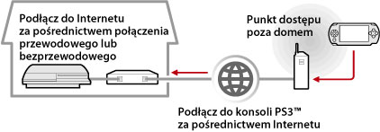

Sieć > Użycie zdalnego grania (za pomocą Internetu)
Użycie zdalnego grania (za pomocą Internetu)
Aby używać tej funkcji, może być konieczne zaktualizowanie oprogramowania systemowego konsoli PS3™ i konsoli PSP™.
Korzystając z bezprzewodowego punktu dostępowego (np. komercyjnego hotspotu bezprzewodowej sieci LAN), można przez Internet ustanowić połączenie między swoją konsolą PSP™ a konsolą PS3™ pozostawioną w domu. Aby można było grać zdalnie spoza domu, na konsoli PS3™ należy włączyć tryb czuwania w oczekiwaniu na połączenie zdalnego grania.

Wskazówka
Zasady korzystania z komercyjnych hotspotów bezprzewodowej sieci LAN i opłaty za korzystanie różnią się w zależności od usługodawcy. Szczegółowe informacje na ten temat można uzyskać u samego usługodawcy.
Przygotowanie (1) (konsole PS3™ i PSP™)
Przystępując po raz pierwszy do zdalnego grania, należy zarejestrować konsolę PSP™ w konsoli PS3™ (połączyć oba urządzenia). Rejestracji dokonuje się za pomocą funkcji  (Ustawienia) >
(Ustawienia) >  (Ustawienia gry zdalnej) > [Zarejestruj urządzenie].
(Ustawienia gry zdalnej) > [Zarejestruj urządzenie].
Przygotowanie (2) (konsola PS3™)
Ustawianie konsoli PS3™ do przejścia w tryb czuwania. Wartość opcji [Zdalne uruchamianie] należy ustawić na [Wł.], aby można było włączyć konsolę PS3™, używając konsoli PSP™.
1. |
Na konsoli PS3™ należy wykonać następujące kroki:
|
|---|---|
2. |
Wyłącz konsolę PS3™. |
 (Użytkownicy).
(Użytkownicy). (Wyłącz system), aby wyłączyć system i ustawić tryb czuwania. Sprawdź, czy kontrolka zasilania świeci się na czerwono.
(Wyłącz system), aby wyłączyć system i ustawić tryb czuwania. Sprawdź, czy kontrolka zasilania świeci się na czerwono.Wskazówka
Szczegółowe informacje dotyczące ustawień opisanych w kroku 1 można znaleźć w sekcji (Ustawienia) > (Ustawienia gry zdalnej) > [Zdalne uruchamianie] w niniejszej instrukcji.
Przygotowanie (3) (konsola PSP™)
Utwórz połączenie sieciowe łączące konsolę PSP™ z punktem dostępu. Może to być na przykład komercyjny hotspot bezprzewodowej sieci LAN. Szczegółowe informacje na ten temat można znaleźć w instrukcji obsługi konsoli PSP™.
Używanie funkcji zdalnego grania
1. |
Na konsoli PSP™ wybierz opcje |
|---|---|
2. |
Kliknij przycisk [Connect via Internet]. |
3. |
Na liście połączeń zaznacz połączenie z punktem dostępu, które ma być używane przez funkcję zdalnego grania. |
4. |
Wprowadź identyfikator logowania i hasło używanego konta PlayStation®Network.
|
 (Sieć) >
(Sieć) >  (Gra zdalna).
(Gra zdalna).
Kończenie zdalnego grania
Na konsoli PSP™ naciśnij przycisk PS (przycisk HOME), a następnie naciśnij przycisk [Quit Remote Play] > [Quit and Turn Off the PS3™ System].
Wskazówka
Wybierz opcję [Quit Without Turning Off the PS3™ System] w przypadku używania konsoli PS3™ do kopiowania plików, pobierania w tle lub wykonywania innych zadań wymagających pozostawienia włączonego systemu.
Używanie funkcji zdalnego grania za pośrednictwem Internetu
Zależnie od wykorzystywanych urządzeń sieciowych funkcja zdalnego grania za pośrednictwem Internetu może być niedostępna. W takim przypadku należy wykonać następujące czynności:
- Za pomocą funkcji (Ustawienia) >
 (Ustawienia sieci) > [Test połączenia internetowego] sprawdź, czy konsola PSP™ jest w stanie połączyć się z Internetem oraz usługą PlayStation®Network.
(Ustawienia sieci) > [Test połączenia internetowego] sprawdź, czy konsola PSP™ jest w stanie połączyć się z Internetem oraz usługą PlayStation®Network. - Jeśli używany router obsługuje standard UPnP, włącz w nim obsługę funkcji UPnP.
- Jeśli używany router nie obsługuje standardu UPnP, skonfiguruj w nim funkcję przekierowywania portów, ponieważ tylko wtedy będzie istniała możliwość komunikacji z konsolą PS3™ za pośrednictwem Internetu. Funkcja zdalnego grania korzysta z portu TCP: 9293. Informacje na temat konfigurowania tej opcji można znaleźć w instrukcji dołączonej do routera.
- Przekierowywanie portów to funkcja odpowiadająca za przekazywanie sygnałów przychodzących do jednego portu (wejścia) do innego określonego portu (wyjścia). Inne popularne nazwy tej funkcji to „mapowanie portów” i „konwersja adresów”.
- Jeśli konsola PS3™ łączy się z Internetem za pośrednictwem więcej niż jednego routera, mogą występować problemy z komunikacją.
Wskazówki
- Router to urządzenie, które umożliwia współużytkowanie jednego łącza internetowego przez kilka urządzeń.
- Zależnie od funkcji zabezpieczeń skonfigurowanych w routerze i określonych przez dostawcę usług internetowych mogą istnieć ograniczenia w komunikacji. Więcej informacji można znaleźć w instrukcjach dołączonych do urządzenia sieciowego oraz uzyskać od dostawcy.